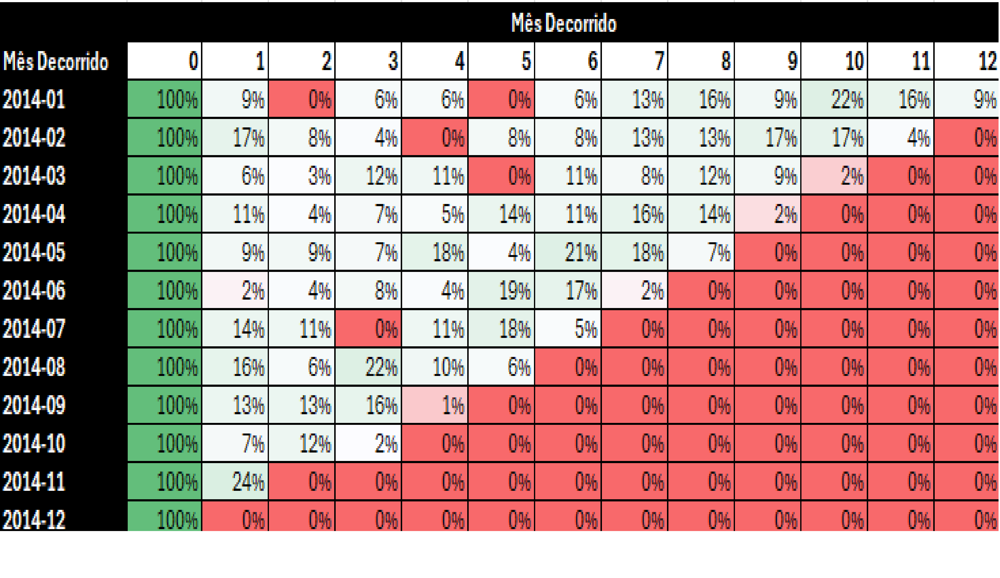
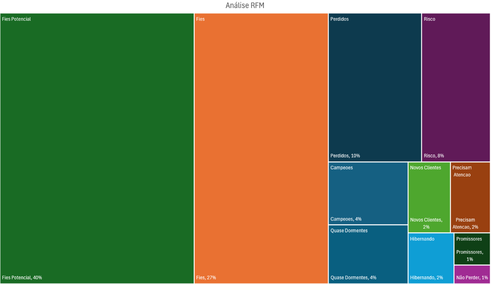

Análisis Cohorte – SuperStore
Utilizando Excel, desarrollé un análisis de retención de clientes (Cohort Analysis) con datos reales de una cadena nacional de supermercados. A partir de la limpieza y estructuración de datos, identifiqué los mejores grupos de adquisición y patrones de comportamiento, generando insights estratégicos para retención y ventas.
- Herramientas: Excel, BUSCARV, Tablas Dinámicas, Formato Condicional
- Resultado: La cohorte de mayo/2014 tuvo la mejor retención después de 6 meses (11%)
- Insight clave: Las campañas promocionales impactan positivamente en la recompra

Análisis RFM – Segmentación de Clientes
Clasifiqué a los clientes según su comportamiento de compra utilizando la técnica RFM (Recencia, Frecuencia y Valor Monetario). Este análisis permite segmentar la base de clientes para crear campañas personalizadas y maximizar el retorno de inversión en marketing.
- Herramientas: Excel (ÍNDICE, COINCIDIR, SUMAR.SI, PERCENTIL)
- Segmentos creados: Campeones, Leales, Prometedores, Perdidos y más
- Resultados: 40% de los clientes son potencialmente leales; solo 1% está en “No Perder”

DataLuz – Plataforma SaaS para E-commerce
Desarrollé una solución digital ficticia para pequeños y medianos e-commerce que enfrentan dificultades con el análisis de datos. DataLuz ofrece dashboards intuitivos, alertas automáticas vía WhatsApp e informes personalizados. El proyecto forma parte del curso de la Comunidad DS e incluye la creación completa de un modelo de negocio digital con estrategias AARRR.
- Herramientas: Estrategia de Producto, Métricas AARRR, Viaje del Cliente
- Problema: Falta de tiempo y conocimiento técnico para Business Intelligence
- Solución: Integración vía API, informes automatizados y visualización simplificada
- Destaque: Envío de insights directamente al WhatsApp del emprendedor

Predicción de Fidelidad con IA – Clasificación de Clientes
En este proyecto desarrollé un modelo de Machine Learning utilizando Árbol de Decisión para predecir la probabilidad de que los clientes se adhieran a programas de fidelización (Aurora, Nova y Star). La interfaz fue construida con Gradio, permitiendo que cualquier persona simule la clasificación de un nuevo cliente de forma intuitiva. Ideal para marketing y retención.
- Herramientas: Python, Pandas, Scikit-Learn, Gradio, Matplotlib
- Problema: Las empresas no sabían predecir la adhesión a los programas de fidelización
- Solución: Clasificación con árbol de decisión + interfaz interactiva en Gradio
- Destaque: Proyecto con despliegue interactivo y visualización del árbol en tiempo real

Simulación Jurídica con Datos Sintéticos para Data Science
Desarrollé un generador de datos jurídicos sintéticos y realistas, creando un dataset completo con 2.000 procesos, partes involucradas y movimientos procesales. Esta solución es ideal para demostrar habilidades en análisis de datos, BI y modelado predictivo en un escenario que simula el mundo legal real.
- Herramientas: Python, Pandas, Faker
- Problema: Dificultad para acceder a datos jurídicos detallados debido a la confidencialidad
- Solución: Script que genera un dataset robusto y verosímil en formato .csv, listo para usar en Power BI, Excel o Python
- Destaque: Capacidad de simular un entorno complejo, con valores de causa, provisiones de riesgo, fases procesales y abogados responsables

Análisis de Alojamiento y Precios – Airbnb NYC
Proyecto completo de análisis de datos utilizando un gran conjunto de datos de Airbnb en Nueva York. El objetivo fue transformar miles de registros en insights estratégicos sobre alojamiento, precios y patrones de localización mediante un dashboard dinámico e intuitivo en Power BI.
- Herramientas: Power BI, Power Query, DAX
- Destaques: Gráfico de Pareto (Top 100 barrios), mapa geográfico, análisis temporal e indicadores de rendimiento (KPIs)
- Insight clave: Identificación de barrios con alta concentración de alojamientos premium y patrones de precios por temporada